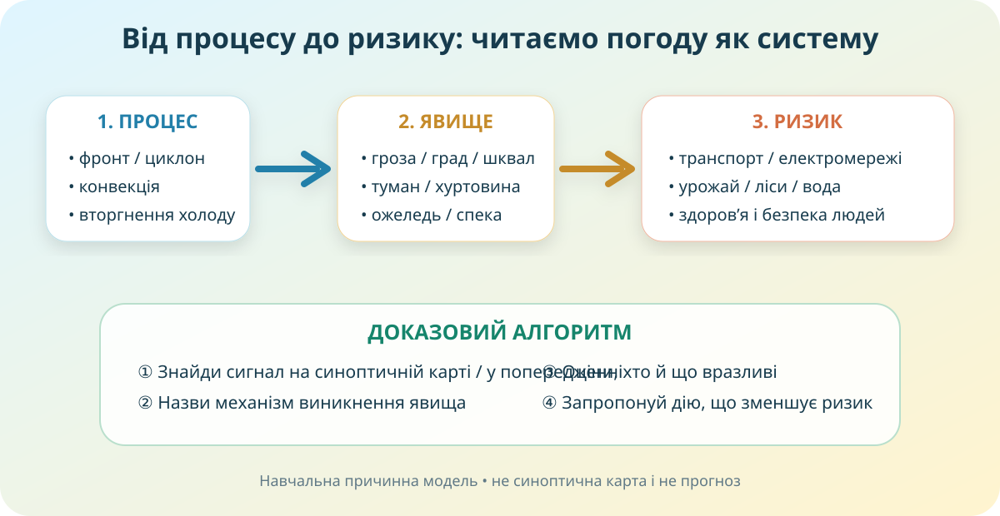

Що робить погоду небезпечною?
Оберіть явище, яке Ви реально спостерігали у своїй місцевості, і сформулюйте гіпотезу.

Синоптична карта: не декор, а доказ
Синоптична карта об’єднує спостереження за тиском, фронтами, опадами, хмарністю, вітром та іншими елементами погоди. Відкрийте офіційний прогноз і попередження УкрГМЦ.
Прогноз УкрГМЦ ↗Метеопопередження ↗Як працюють синоптики ↗Декодуємо ситуацію
На синоптичній карті наближається холодний фронт, очікуються грози й поривчастий вітер. Який висновок найкоректніший?
Одне явище — різні наслідки
Блискавка, град, шквал, локальна злива. Особливо небезпечна для відкритих просторів, мереж, авіації.
Знижує видимість; навіть «тиха» погода може різко підвищити транспортний ризик.
Ризики для здоров’я, врожаю, водних ресурсів і пожежної небезпеки.
Перемети, погіршення видимості, обледеніння, збої транспорту й енергомереж.
| Сценарій | Атмосферний процес | Небезпечне явище | Ризик | Рішення |
|---|---|---|---|---|
| Після спекотного дня швидко ростуть купчасто-дощові хмари | ||||
| Вночі температура біля 0 °C, переохолоджений дощ | ||||
| Тривалий антициклон у липні, дефіцит опадів |
Ожеледь ≠ ожеледиця. Так, одна літера — і вже інша фізика.
Відкладення льоду на предметах — гілках, дротах, будівлях, поверхнях — коли переохолоджені краплі замерзають при контакті.
Шар льоду саме на земній поверхні та дорогах, який виникає після замерзання води, мокрого снігу або опадів.
Мнемоніка: ожеледиця — дивіться під ноги й на дорогу; ожеледь — лід «одягає» предмети.
Зміна клімату: «більше екстремумів» — не універсальна відмичка
Коректне твердження має називати конкретний механізм. Потепління може посилювати теплові хвилі та випаровування; тепліше повітря здатне містити більше водяної пари, що за відповідних умов підсилює інтенсивні опади. Але не кожна гроза, посуха чи ожеледь є «доказом зміни клімату».
Побудуйте ланцюжок
Коротко: що треба винести з уроку
1. Небезпечне явище
Оцінюємо не лише сам процес, а інтенсивність + територію + тривалість + уразливість.
2. Синоптична карта
Допомагає встановити механізм: фронти, циклони, антициклони, поля тиску, вітер, опади.
3. Рішення
Хороший географічний висновок завершується дією: що саме зменшує ризик і для кого.
Як виглядає небезпечна погода в реальному прогнозі
Дивіться не як новини, а як синоптик-аналітик. За 2 хвилини зафіксуйте:
- які явища названо;
- для яких регіонів;
- який причинний механізм;
- який практичний ризик.
Тест: спершу ідентифікація
Фінальний доказовий висновок
Твердження (Claim): яке несприятливе явище є одним із найважливіших ризиків для Вашої місцевості?
Докази (Evidence): наведіть щонайменше два: карта/попередження, спостереження, особливість рельєфу, забудови, транспорту тощо.
Міркування (Reasoning): поясніть причинний ланцюжок «атмосферний процес → явище → вразливість → ризик → дія».
Міні-досьє «Погодні ризики моєї місцевості»
- Опрацюйте відповідний параграф електронного підручника.
- Оберіть одне явище: гроза, град, шквал, туман, ожеледь/ожеледиця, спека, посуха, сильний сніг або інше актуальне для Вашої місцевості.
- Знайдіть 2 надійні джерела: УкрГМЦ + ще одне офіційне/наукове.
- Створіть таблицю: коли виникає → ознаки → найбільш уразливі об’єкти → безпечна дія.
- Завершіть CER-висновком у 4–6 реченнях.